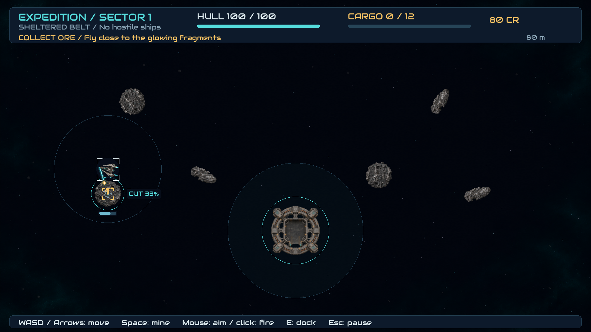
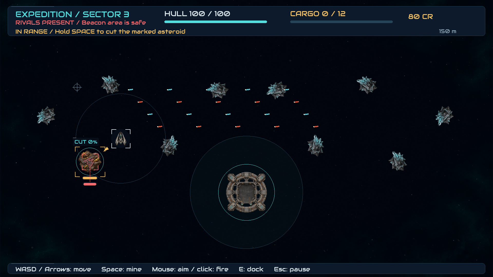
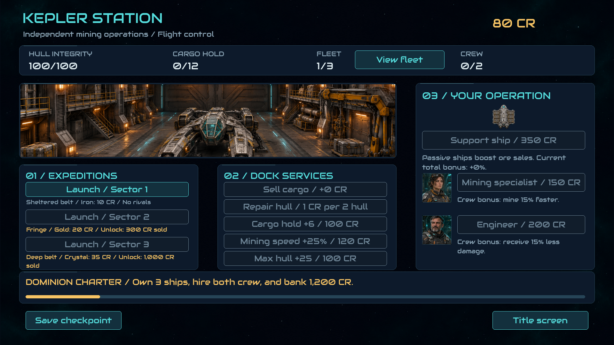
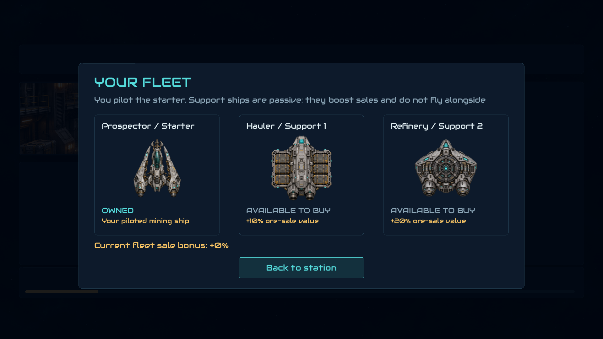

Dust to Dominion — actual vs reference
VISUAL ACCEPTANCE OPEN — awaiting Serge’s image review
Left: the latest retained actual game renderer captures, from synthetic review states. Right: corresponding panels from your supplied realistic reference. Original images are unchanged; the reference is clipped for comparison and both sides fit without stretching. These are not new native screenshots or a claim that the concept is implemented.
Mining & exploration
ACTUAL GAME · 1920 × 1080 · renderer fixture
REFERENCE · 01 / Mining & exploration · concept art The current view spreads small actors across a mostly empty arena. The concept uses a close scene with large fractured rocks, a prominent station and a bright mining contact point.
Original 1080p PNG · 4K output PNG (1080p world canvas) · Back to top
Rival combat
ACTUAL GAME · 1920 × 1080 · renderer fixture
REFERENCE · 04 / Rival combat · concept art This is a stress fixture: the rival deliberately overlaps ore and projectiles are arranged synthetically. It proves the actual drawing, not a naturally played firefight. The reference separates the ships and makes the exchange the focal point.
Original 1080p PNG · 4K output PNG (1080p world canvas) · Back to top
Kepler Station
ACTUAL GAME · 1920 × 1080 · renderer fixture
REFERENCE · 03 / Kepler Station · concept art The current detailed bay is confined to a shallow banner that cuts off the foreground ship. The concept gives the dock most of the panel and integrates a compact service menu. The current screen also carries more functions than this concept panel.
Original 1080p PNG · 4K output PNG (1080p world canvas) · Back to top
Fleet / ship designs
ACTUAL GAME · 1920 × 1080 · renderer fixture
REFERENCE · 02 / Ship designs · concept art Fleet is the closest match: distinct detailed hulls and clear roles. The reference adds brighter cyan engines, stronger highlights and darker presentation. Its rival is a design example, not a purchasable fourth fleet member.
Original 1080p PNG · 4K output PNG (1080p world canvas) · Back to top
The three largest visible differences
- Camera / framing: flight actors occupy only a small part of the screen, while the concept is a close composition. The HUD and range rings attract more attention than the ships. Start by evaluating a 1.5× follow camera and optional 2× close view with an overview and offscreen threat/station cues. This improves scale but will not fully match the concept’s much tighter framing. Give the station illustration a taller composition; flight zoom cannot repair its banner crop.
- Artwork: the game has real textured sprites, but iron rocks look like small grey pebbles rather than large fractured masses with mineral veins. Hulls have less pronounced cyan emission and material contrast. Closing this needs better ore silhouettes and fracture/material variants, stronger authored light/emission layers, and a dock composition made for the intended panel. Fleet hulls already have useful detail; replacing everything is unnecessary.
- Rendering / feedback: the concept conveys depth and energy through bright mining contact, sparks, exhaust, light spill and atmospheric layers. The current beam and projectile marks are restrained, with flat baked lighting, thin rings and solid UI panels. Add bounded effects tied to actual mining damage/depletion and rival hits/destruction, selective glow, and subtle layered background motion. Native-size world drawing would improve sharpness, but cannot invent material detail or lighting.
Firing at asteroids currently does not damage them: weapons collide with rivals; Space mines rocks. A convincing rock breakup when mining completes can preserve gameplay. Making bullets destroy rocks would be a separate gameplay change.
Camera zoom: useful, with a real coordinate transform
Recommendation for a prototype, not an implemented change: a clamped player-follow camera, initially 1.5×, with a 1× overview and optional 2× close view. Keep all simulation positions, speeds, hitboxes, mining range, docking/safe radii, AI distances and saves unchanged. Zoom affects presentation only. The current 64-unit ship artwork slot becomes 96 logical pixels at 1.5× or 128 at 2×; all scenery scales by the same factor.
view = viewport_center + zoom * (world - camera_center)
world = camera_center + (view - viewport_center) / zoom
Apply the first transform to every actor, projectile, beam, effect, ring and world anchor. Scale world radii by zoom. Place readable labels after transformation, clip world drawing below the HUD, and leave menus/text independent of world zoom. Draw from source sprites at the final projected size rather than magnifying a finished 1080p frame.
Convert input into logical view coordinates exactly once, then apply the inverse. In the existing fullscreen path SDL SCALED already maps the mouse to the 1920×1080 display surface; do not scale it a second time. Windowed input uses the current surface-to-design mapping. Store the cursor in view space and recompute world aim as the camera moves, even with a stationary mouse. Preserve a quick click’s world target at event time and keep existing focus/pause clearing.
Trade-off: zoom reduces visible world area to 1/zoom². At 2× only a quarter of the same viewport’s world area remains visible; enemies may be within attack range while offscreen. Use clear threat cues and an overview, and test camera edges rather than changing AI or weapon ranges to hide the problem. Clamp to world bounds; center/pad an axis when its visible extent exceeds those bounds.
Required validation before shipping a camera
World→view→world round trips at all zooms, window sizes and edge clamps; pointer-to-target alignment across windowed/fullscreen transitions; stationary-cursor aim during camera motion; quick clicks, held fire, mining and docking at boundaries; no HUD input leakage; offscreen enemy readability; unchanged deterministic simulation outcomes and save bytes for identical world inputs; label placement and clipping; source-sprite cache limits and native frame timings. Native 4K and physical mouse acceptance remain separate.
Output size is not internal world resolution
| Evidence | Output / window | Internal world drawing | What it proves |
|---|
| Shown actual captures | 1920 × 1080 PNG | 1920 × 1080 | Actual offscreen renderer appearance in fixtures |
| Retained 4K captures | 3840 × 2160 PNG | 1920 × 1080, then scaled; text drawn at output size | 4K output/layout, not native 4K world detail |
| Retained native Cocoa fullscreen probe | 3440 × 1440 desktop window | 1920 × 1080 display backbuffer and world canvas, SDL scaled | Native fullscreen transition on that monitor, not physical 4K |
| Physical 3840 × 2160 fullscreen | Unverified | Not established | No acceptance evidence yet |
A sharper world requires drawing directly at the output viewport resolution, choosing sprite sizes from camera zoom × display scale. Current world sources are normalized to 512 × 512; higher-resolution originals remain on disk. Larger projected station/rock assets may need those originals or higher-quality replacements. Output size, camera scale and source-art detail are three independent limits.
Prior technical checks: 1,860 tests passed; the known dummy-display warning was “no fast renderer available.” The retained native probe log had no warnings. These are previous validation results, not a new test run for this comparison. Physical play/audio and visual approval remain open.
Detailed review and source pointers · Source hashes and panel coordinates · Previous validation report